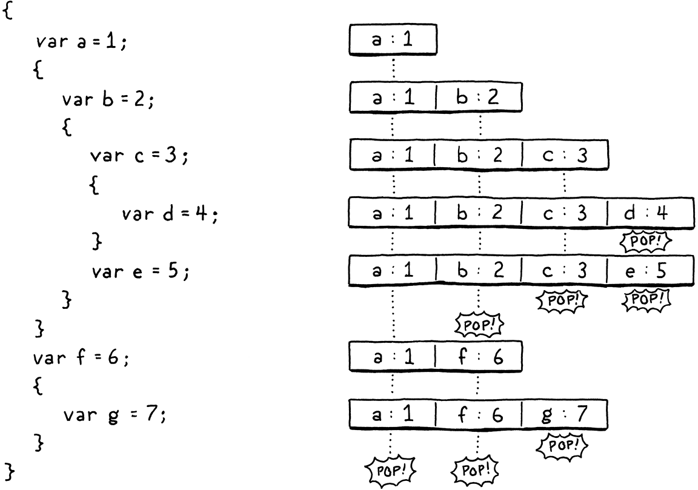
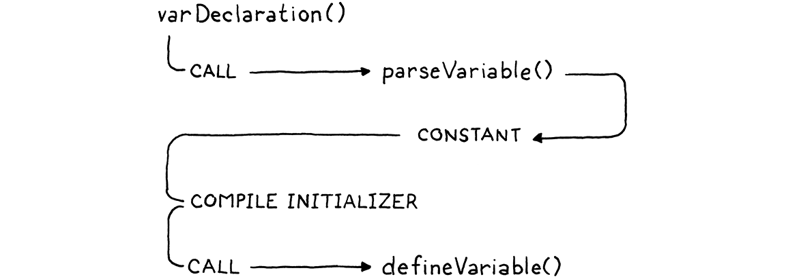
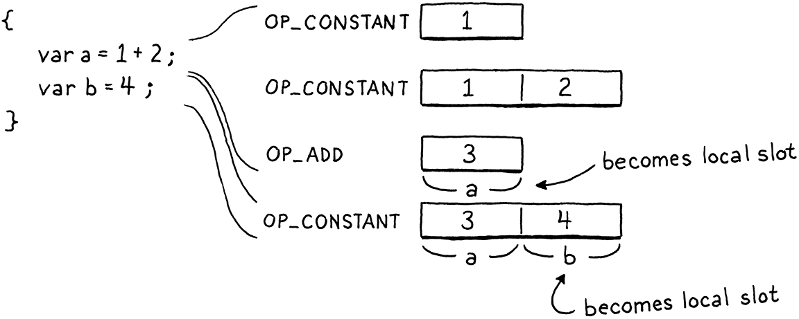

局部变量
于是想象把它们幻化出来： 那些未知之物的形状；诗人的笔 将其化为有形，并让那空无一物者 获得一处具体的居所，和一个名字。
威廉·莎士比亚，《仲夏夜之梦》
上一章给 clox 引入了变量，但只有全局这一种。这一章，我们把这件事扩展到支持块、块作用域和局部变量。在 jlox 里，我们勉强把这一切连同全局变量都塞进一章。对 clox 来说，那是两章的活儿，部分原因，说白了，是因为在 C 里凡事都要多费一番功夫。
但还有个更重要的原因：我们处理局部变量的做法，会跟我们实现全局变量时相当不同。在 Lox 里，全局变量是晚绑定的。这里的「晚」，意思是「编译时间之后才解析」。这有利于保持编译器简单，但性能上不怎么样。局部变量是一门语言里被使用最多的部件之一。局部变量要是慢，一切就都慢。所以我们要给局部变量一套尽可能高效的方案。
好在词法作用域来帮我们了。顾名思义：词法作用域意味着我们只要看看程序的文本，就能解析出一个局部变量——局部变量不是晚绑定的。我们在编译器里做的每一份处理工作，都是我们不必在运行时再做的工作，所以我们的局部变量实现会极大地倚重编译器。
22 . 1表示局部变量
在如今这个时代动手改造一门编程语言，有个好处：有层出不穷的前辈语言可供借鉴。那么 C 和 Java 是怎么管理它们的局部变量的呢？当然是放在栈上！它们通常用芯片和操作系统提供的原生栈机制。这对我们来说有点太底层了，不过在 clox 这个虚拟世界里，我们有自己的栈可用。
眼下，我们只用它来保存临时值——计算表达式时需要记住的短命数据块。只要不妨碍那些临时值，我们也可以把自己的局部变量塞进栈里。这对性能极好。给一个新的局部变量分配空间，只需要把 stackTop 指针加一；释放同样是减一。从一个已知的栈槽位访问变量，就是一次带下标的数组查表。
不过我们确实得小心。虚拟机期望这个栈表现得像——嗯——一个栈。我们得接受：只能在栈顶分配新的局部变量；也只有当它上面没有别的东西时，才能丢弃一个局部变量。另外，我们得确保临时值不来捣乱。
方便的是，Lox 的设计跟这些约束相安无事。新的局部变量总是由声明语句创建的。而语句不会嵌套在表达式里，所以一条语句开始执行时，栈上绝不会有任何临时值。块则是严格嵌套的。一个块结束时，带走的总是最内层、最近声明的那些局部变量。既然它们也是最后才进入作用域的局部变量，那它们就该待在栈顶——正是我们需要它们在的地方。
一步步走过这个示例程序，看看局部变量是怎么进入和离开作用域的：

看出它们跟栈配合得多完美了吗？看来运行时用栈来存局部变量是可行的。但我们能做得更进一步。我们不只是知道它们会在栈上，还能精确钉死它们在栈上的哪个位置。由于编译器确切知道任何时刻哪些局部变量在作用域内，它完全可以在编译过程中模拟这个栈，并记下每个变量住在栈的哪里。
我们会利用这一点，把这些栈偏移量当作读写局部变量的字节码指令的操作数。这让操作局部变量快得惊人——像给数组下标一样简单。
要让这一切运转起来，编译器里需要跟踪大量状态，我们就从那里开始。在 jlox 里，我们用一条由「环境」HashMap 串成的链，来跟踪当前哪些局部变量在作用域内。那算是表示词法作用域的经典教科书式做法。对 clox 来说，一如既往，我们再往底层贴近一点。所有这些状态都住在一个新的结构体里。
} ParseRule;
加在结构体 ParseRule 之后
typedef struct { Local locals[UINT8_COUNT]; int localCount; int scopeDepth; } Compiler;
Parser parser;
我们有一个简单、扁平的数组，装编译过程中每个时刻都在作用域内的全部局部变量。它们在数组里按声明在代码中出现的顺序排列。由于我们将用来编码一个局部变量的指令操作数是单字节，虚拟机能同时在作用域内的局部变量数量有个硬上限。这也意味着我们可以给 locals 数组一个固定大小。
#define DEBUG_TRACE_EXECUTION
#define UINT8_COUNT (UINT8_MAX + 1)
#endif
回到 Compiler 结构体里，localCount 字段跟踪有多少局部变量在作用域内——也就是那些数组槽位有多少个正在被用。我们还跟踪「作用域深度」。它就是包围着当前正在编译的这部分代码的块的数量。
我们的 Java 解释器用一条 map 链，把每个块的变量与其他块的分开。这一次，我们干脆按变量出现处的嵌套层级给它们编号。零是全局作用域，一是最外层的那个块，二是那个块里面，你懂的。我们用它来跟踪每个局部变量属于哪个块，以便知道一个块结束时该丢弃哪些局部变量。
数组里的每个局部变量都是这些之一：
} ParseRule;
加在结构体 ParseRule 之后
typedef struct { Token name; int depth; } Local;
typedef struct {
我们存下变量的名字。解析标识符时，我们拿标识符的词素跟每个局部变量的名字比对来找匹配。不知道名字的话，解析变量会相当困难。depth 字段记录这个局部变量被声明时所在块的作用域深度。眼下我们需要的状态就这些。
这跟我们在 jlox 里那套表示法很不一样，但它仍然能回答编译器需要向词法环境提出的全部问题。下一步是弄清楚编译器怎么拿到这份状态。如果我们是有原则的工程师，就会给前端每个函数加一个参数，接受一个指向 Compiler 的指针。我们在开头创建一个 Compiler，然后小心翼翼地把它穿过每一次函数调用传下去……但那意味着要对我们已经写好的代码做一大堆无聊的改动。所以这里改用一个全局变量：
Parser parser;
加在变量 parser 之后
Compiler* current = NULL;
Chunk* compilingChunk;
下面这个小函数用来初始化编译器：
加在 emitConstant() 之后
static void initCompiler(Compiler* compiler) { compiler->localCount = 0; compiler->scopeDepth = 0; current = compiler; }
虚拟机刚启动时，我们调用它，把一切弄到干净状态。
initScanner(source);
在 compile() 内
Compiler compiler; initCompiler(&compiler);
compilingChunk = chunk;
我们的编译器有了它需要的数据，却还没有针对这些数据的操作。它没法创建和销毁作用域，也没法添加和解析变量。我们会按需要加上这些。先从搭一些语言特性开始。
22 . 2块语句
在能有任何局部变量之前，我们需要一些局部作用域。它们来自两样东西：函数体和块。函数是一大块活儿，我们后面某一章再去啃，所以眼下只做块。照例，我们从语法开始。我们要引入的新文法是：
statement → exprStmt | printStmt | block ; block → "{" declaration* "}" ;
块是一种语句，所以它的规则要放进 statement 产生式里。编译一个块的相应代码长这样：
if (match(TOKEN_PRINT)) {
printStatement();
在 statement() 内
} else if (match(TOKEN_LEFT_BRACE)) { beginScope(); block(); endScope();
} else {
解析完开头那个左花括号之后，我们用这个辅助函数来编译块的其余部分：
加在 expression() 之后
static void block() { while (!check(TOKEN_RIGHT_BRACE) && !check(TOKEN_EOF)) { declaration(); } consume(TOKEN_RIGHT_BRACE, "Expect '}' after block."); }
它不断解析声明和语句，直到撞上收尾的大花括号。和解析器里任何循环一样，我们也会检查词法单元流是否结束。这样一来，如果有个残缺程序少了个收尾花括号，编译器也不会卡在死循环里。
执行一个块，无非就是把它包含的语句一条接一条执行，所以编译它们没什么可做的。块在语义上有意思的地方，是它会创建作用域。在编译一个块的主体之前，我们调用这个函数进入一个新的局部作用域：
加在 endCompiler() 之后
static void beginScope() { current->scopeDepth++; }
要「创建」一个作用域，我们所做的就是把当前深度加一。这当然比 jlox 快得多——后者给每一个作用域都分配一整张新的 HashMap。知道了 beginScope()，你大概能猜出 endScope() 干什么。
加在 beginScope() 之后
static void endScope() { current->scopeDepth--; }
块和作用域大致就是这些，所以我们已经准备好往里塞一些变量了。
22 . 3声明局部变量
通常这一节要从解析讲起，但我们的编译器已经支持解析并编译变量声明了。我们已经有了 var 语句、标识符表达式和赋值。只是编译器假定所有变量都是全局的。所以我们不需要新的解析支持，只需要把新的作用域语义接到现有代码上。

变量声明的解析始于 varDeclaration()，并依赖另外几个函数。首先，parseVariable() 消费掉作为变量名的标识符词法单元，把它的词素作为字符串加进字节码块的常量表，然后返回它被加进去的那个常量表下标。接着，在 varDeclaration() 编译完初始化表达式之后，它调用 defineVariable()，发射把变量值存进全局变量哈希表的字节码。
这两个辅助函数都需要做些改动来支持局部变量。在 parseVariable() 里，我们加上：
consume(TOKEN_IDENTIFIER, errorMessage);
在 parseVariable() 内
declareVariable(); if (current->scopeDepth > 0) return 0;
return identifierConstant(&parser.previous);
首先，我们把这个变量「声明」了。这是什么意思，我马上就说。然后，如果我们处在一个局部作用域里，就从这个函数退出。运行时，局部变量不是按名字查找的。没必要把变量的名字塞进常量表，所以如果这个声明位于一个局部作用域内，我们改为返回一个占位的表下标。
在 defineVariable() 那边，如果我们处在一个局部作用域里，需要发射存储局部变量的代码。长这样：
static void defineVariable(uint8_t global) {
在 defineVariable() 内
if (current->scopeDepth > 0) { return; }
emitBytes(OP_DEFINE_GLOBAL, global);
等等，什么？没错。就是它。运行时没有任何代码用来创建局部变量。想一想虚拟机此刻处在什么状态。它已经执行完变量初始化器的代码（用户没写初始化器的话，就是那个隐式的 nil），那个值正待在栈顶，作为唯一剩下的临时值。我们也知道新的局部变量是在栈顶分配的……而那个值已经在那儿了。于是，什么都不用做。那个临时值就变成了局部变量。很难比这更高效了。

好，那么「声明」到底声明了什么？它做的是这个：
加在 identifierConstant() 之后
static void declareVariable() { if (current->scopeDepth == 0) return; Token* name = &parser.previous; addLocal(*name); }
这就是编译器记录这个变量存在的地方。我们只对局部变量这么做，所以如果我们在最外层的全局作用域里，就直接退出。因为全局变量是晚绑定的，编译器并不记录它见过它们的哪些声明。
但对局部变量来说，编译器确实需要记住这个变量存在。这正是声明它的作用——把它加进编译器「当前作用域的变量列表」。我们用另一个新函数来实现这一点。
加在 identifierConstant() 之后
static void addLocal(Token name) { Local* local = ¤t->locals[current->localCount++]; local->name = name; local->depth = current->scopeDepth; }
它初始化编译器变量数组里下一个可用的 Local。它存下这个变量的名字，以及拥有它的那个作用域的深度。
对一个正确的 Lox 程序，我们的实现够用了。但对错误的代码呢？我们尽量做得健壮些。要处理的第一个错误，其实不算用户的错，而更像是虚拟机的一个限制。操作局部变量的指令是按槽位下标引用它们的。那个下标存放在一个单字节操作数里，这意味着虚拟机同时只能支持最多 256 个在作用域内的局部变量。
如果我们超了这个数，不仅运行时没法引用它们，编译器自己的 locals 数组也会被覆写。我们来防住这一点。
static void addLocal(Token name) {
在 addLocal() 内
if (current->localCount == UINT8_COUNT) { error("Too many local variables in function."); return; }
Local* local = ¤t->locals[current->localCount++];
下一种情况更棘手。考虑这个：
{
var a = "first";
var a = "second";
}
在最外层，Lox 允许用跟先前声明相同的名字重新声明一个变量，因为这对 REPL 很有用。但在一个局部作用域里面，那是很奇怪的一件事。它很可能是个错误，而包括我们自己的 Lox 在内的许多语言，都把「这是错误」这条假定写进了语言规范。
注意，上面的程序跟这个是不同的：
{
var a = "outer";
{
var a = "inner";
}
}
在不同的作用域里有两个同名的变量是没问题的，即便这两个作用域有重叠、以至于两者同时可见。那叫遮蔽，而 Lox 确实允许。只有在同一个局部作用域里出现两个同名变量，才是个错误。
我们这样侦测那个错误：
Token* name = &parser.previous;
在 declareVariable() 内
for (int i = current->localCount - 1; i >= 0; i--) { Local* local = ¤t->locals[i]; if (local->depth != -1 && local->depth < current->scopeDepth) { break; } if (identifiersEqual(name, &local->name)) { error("Already a variable with this name in this scope."); } }
addLocal(*name); }
局部变量在声明时被追加到数组末尾，这意味着当前作用域永远在数组的尾部。声明一个新变量时，我们从末尾开始往前找，看看有没有一个已存在的同名变量。如果我们在当前作用域里找到了，就报告错误。否则，如果我们走到了数组开头、或者碰到一个属于别的作用域的变量，那就说明作用域里的变量已经查完了。
要看两个标识符是不是同一个，我们用这个：
加在 identifierConstant() 之后
static bool identifiersEqual(Token* a, Token* b) { if (a->length != b->length) return false; return memcmp(a->start, b->start, a->length) == 0; }
既然我们知道两个词素的长度，就先查这个。对很多不相等的字符串，这一步会很快失败。如果长度相同，我们再用 memcmp() 检查字符。要用到 memcmp()，我们需要一个 include。
#include <stdlib.h>
#include <string.h>
#include "common.h"
有了这些，我们能让变量诞生了。可它们像幽灵一样，在被声明的那个作用域之外仍然赖着不走。一个块结束时，我们需要让它们安息。
current->scopeDepth--;
在 endScope() 内
while (current->localCount > 0 && current->locals[current->localCount - 1].depth > current->scopeDepth) { emitByte(OP_POP); current->localCount--; }
}
弹出一个作用域时，我们从后往前走一遍局部数组，找出所有在我们刚离开的那个作用域深度上声明的变量。只要把数组长度减一，就把它们丢弃了。
这其中也有运行时的部分。局部变量占据栈上的槽位。当一个局部变量离开作用域，那个槽位就不再需要、应该被释放。所以对我们丢弃的每一个变量，我们还发射一条 OP_POP 指令，把它从栈上弹掉。
22 . 4使用局部变量
我们现在能编译并执行局部变量声明了。运行时，它们的值正待在栈上该待的地方。我们开始使用它们。变量访问和赋值我们一起做，因为它们碰的是编译器里同一批函数。
我们已经有了读写全局变量的代码，而且——像能干的小软件工程师那样——我们想尽可能多地复用那些现有代码。大概这样：
static void namedVariable(Token name, bool canAssign) {
在 namedVariable() 内
替换 1 行
uint8_t getOp, setOp; int arg = resolveLocal(current, &name); if (arg != -1) { getOp = OP_GET_LOCAL; setOp = OP_SET_LOCAL; } else { arg = identifierConstant(&name); getOp = OP_GET_GLOBAL; setOp = OP_SET_GLOBAL; }
if (canAssign && match(TOKEN_EQUAL)) {
与其把变量访问和赋值各自发射的字节码指令写死，我们改用两个 C 变量。首先，我们试着找一个给定名字的局部变量。找到了，就用操作局部变量的那些指令。否则，我们假定它是全局变量，用现有的那些面向全局变量的字节码指令。
再往下一点，我们用这两个变量来发射正确的指令。赋值：
if (canAssign && match(TOKEN_EQUAL)) {
expression();
在 namedVariable() 内
替换 1 行
emitBytes(setOp, (uint8_t)arg);
} else {
访问：
emitBytes(setOp, (uint8_t)arg);
} else {
在 namedVariable() 内
替换 1 行
emitBytes(getOp, (uint8_t)arg);
}
本章真正的心脏、我们解析局部变量的地方在这里：
加在 identifiersEqual() 之后
static int resolveLocal(Compiler* compiler, Token* name) { for (int i = compiler->localCount - 1; i >= 0; i--) { Local* local = &compiler->locals[i]; if (identifiersEqual(name, &local->name)) { return i; } } return -1; }
尽管担子这么大，它很直截了当。我们走一遍当前在作用域内的局部变量列表。如果有一个跟标识符词法单元同名，那这个标识符必定指的就是那个变量。找到了！我们从后往前走数组，好找到最后声明的那个同名变量。这保证了内层局部变量能正确遮蔽外围作用域里的同名局部变量。
运行时，我们用栈槽位下标来加载和存储局部变量，所以编译器解析出变量之后要算的就是这个。每当一个变量被声明，我们都把它追加到 Compiler 的 locals 数组里。这意味着第一个局部变量在下标零处，下一个在下标一处，如此类推。换句话说，编译器里的 locals 数组，与运行时的虚拟机栈将有的布局完全相同。变量在 locals 数组里的下标，就是它的栈槽位。多方便啊！
如果走完整个数组都没找到给定名字的变量，那它一定不是局部变量。这种情况下，我们返回 -1，以示没找到、应当假定它是全局变量。
22 . 4 . 1解释局部变量
我们的编译器正在发射两条新指令，我们来让它们跑起来。先是加载一个局部变量：
OP_POP,
在枚举 OpCode 内
OP_GET_LOCAL,
OP_GET_GLOBAL,
以及它的实现：
case OP_POP: pop(); break;
在 run() 内
case OP_GET_LOCAL: { uint8_t slot = READ_BYTE(); push(vm.stack[slot]); break; }
case OP_GET_GLOBAL: {
它取一个单字节操作数，表示该局部变量所在的栈槽位。它从那个下标加载出值，再把它压到栈顶，好让后面的指令能找到。
接下来是赋值：
OP_GET_LOCAL,
在枚举 OpCode 内
OP_SET_LOCAL,
OP_GET_GLOBAL,
它的实现你大概能猜到。
}
在 run() 内
case OP_SET_LOCAL: { uint8_t slot = READ_BYTE(); vm.stack[slot] = peek(0); break; }
case OP_GET_GLOBAL: {
它从栈顶取走被赋的值，存进与该局部变量对应的栈槽位。注意，它并不把这个值从栈上弹掉。记住，赋值是一个表达式，而每个表达式都会产出一个值。赋值表达式的值就是被赋的值本身，所以虚拟机就把这个值留在栈上。
没有对这两条新指令的支持，我们的反汇编器就是不完整的。
return simpleInstruction("OP_POP", offset);
在 disassembleInstruction() 内
case OP_GET_LOCAL: return byteInstruction("OP_GET_LOCAL", chunk, offset); case OP_SET_LOCAL: return byteInstruction("OP_SET_LOCAL", chunk, offset);
case OP_GET_GLOBAL:
编译器把局部变量编译成对槽位的直接访问。局部变量的名字根本没有离开过编译器、进入字节码块。这对性能极好，可对内省就不那么友好了。反汇编这些指令时，我们没法像对全局变量那样显示变量名。我们只能显示槽位编号。
加在 simpleInstruction() 之后
static int byteInstruction(const char* name, Chunk* chunk, int offset) { uint8_t slot = chunk->code[offset + 1]; printf("%-16s %4d\n", name, slot); return offset + 2; }
22 . 4 . 2另一个作用域边界情形
我们已经花了不少时间处理作用域周围几个古怪的边界情形。我们确保遮蔽能正确工作。我们会在同一局部作用域里两个变量同名时报错。不知为什么（我自己也没完全想明白），变量作用域似乎有不少这种皱褶。我从没见过哪门语言在这方面让人感觉完全优雅。
本章结束前，我们还有一个边界情形要处理。还记得我们在 jlox 的变量解析实现里初次遇到的这只怪东西吗：
{
var a = "outer";
{
var a = a;
}
}
当时我们把一个变量的声明拆成两个阶段，把它斩杀了。这里我们再来一次：
变量声明一开始——也就是说，在它的初始化表达式之前——这个名字就在当前作用域里被声明了。这个变量存在，但处于一种特殊的「未初始化」状态。然后我们编译初始化表达式。如果在那个表达式的任何地方，我们解析出一个指回这个变量的标识符，就会看到它还没被初始化，于是报错。编译完初始化表达式之后，我们把这个变量标记为已初始化、可以使用。
要实现这一点，声明一个局部变量时，我们得想办法表示那个「未初始化」状态。我们本可以给 Local 加一个新字段，但在内存上我们还是抠一点的好。所以我们改把变量的作用域深度设成一个特殊的哨兵值：-1。
local->name = name;
在 addLocal() 内
替换 1 行
local->depth = -1;
}
稍后，等变量的初始化表达式编译完，我们把它标记为已初始化。
if (current->scopeDepth > 0) {
在 defineVariable() 内
markInitialized();
return; }
它是这样实现的：
加在 parseVariable() 之后
static void markInitialized() { current->locals[current->localCount - 1].depth = current->scopeDepth; }
所以，这才是编译器里「声明」和「定义」一个变量真正的含义。「声明」是把变量加入作用域，「定义」是它变得可以使用。
当我们解析一个对局部变量的引用时，会检查作用域深度，看它是否已经定义完整。
if (identifiersEqual(name, &local->name)) {
在 resolveLocal() 内
if (local->depth == -1) { error("Can't read local variable in its own initializer."); }
return i;
如果这个变量还带着那个哨兵深度，那它必定是在引用自己初始化器里的变量，我们把这报告为一个错误。
这一章到此为止！我们加上了块、局部变量，以及货真价实的词法作用域。考虑到我们为变量引入了一套完全不同的运行时表示法，我们没写多少代码。最后的实现相当干净高效。
你会注意到，我们写的代码几乎全都在编译器里。在运行时那边，只有两条小指令。你会在 clox 里看到这是相对 jlox 一贯的趋势：优化器工具箱里最大的锤子之一，就是把工作前移到编译器，好让你在运行时不必再做。这一章里，这意味着精确解析出每个局部变量占据哪个栈槽位。这样一来，运行时就不需要任何查找或解析了。
习题
-
我们这个简单的局部数组，让计算每个局部变量的栈槽位变得很容易。但这也意味着，编译器解析对一个变量的引用时，得线性扫一遍数组。
想出更高效的办法。你觉得这点额外复杂度值得吗？
-
别的语言怎么处理这样的代码：
var a = a;
要是这是你的语言，你会怎么做？为什么？
-
许多语言会区分「可重新赋值」和「不可重新赋值」的变量。在 Java 里，
final修饰符阻止你给一个变量赋值。在 JavaScript 里，用let声明的变量可以赋值，而用const声明的不行。Swift 把let当作单次赋值、可赋值变量则用var。Scala 和 Kotlin 用val和var。为 Lox 挑一个关键字，代表单次赋值的变量形式，加进语言里。为你的选择给出理由，然后把它实现出来。试图给一个用你的新关键字声明的变量赋值，应当产生一个编译错误。
-
扩展 clox，让它能同时有超过 256 个局部变量处于作用域内。